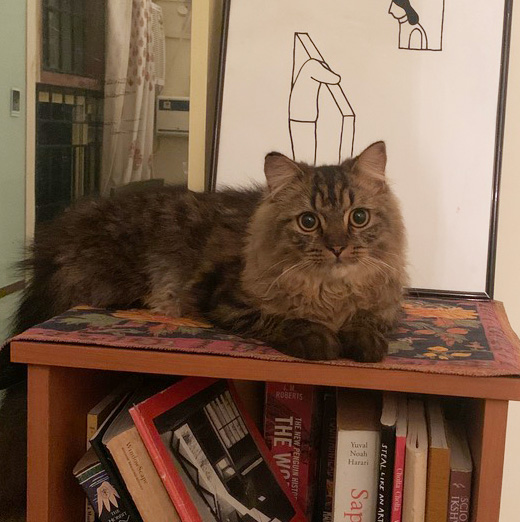
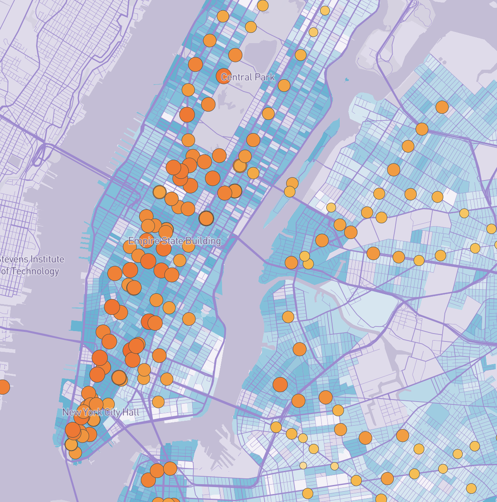
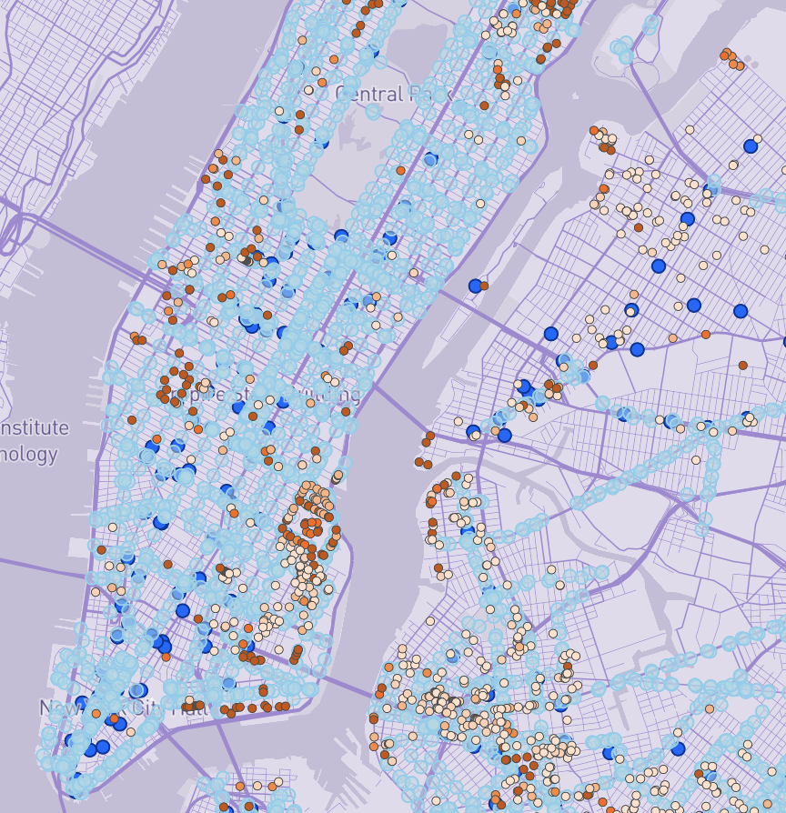
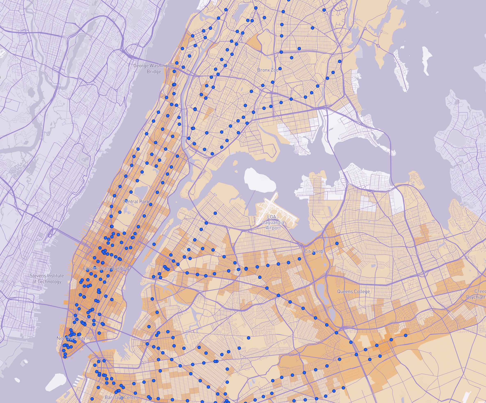
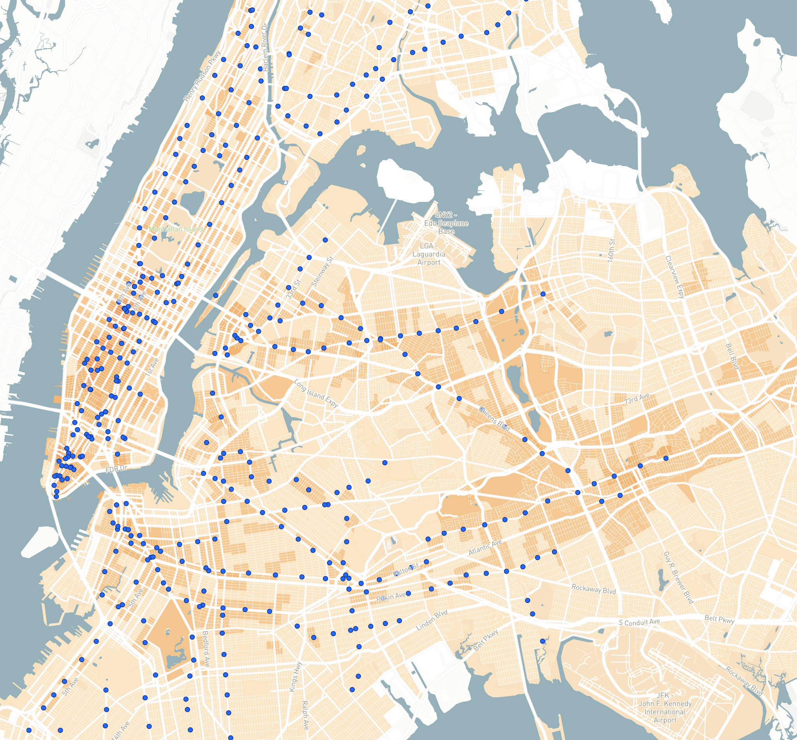
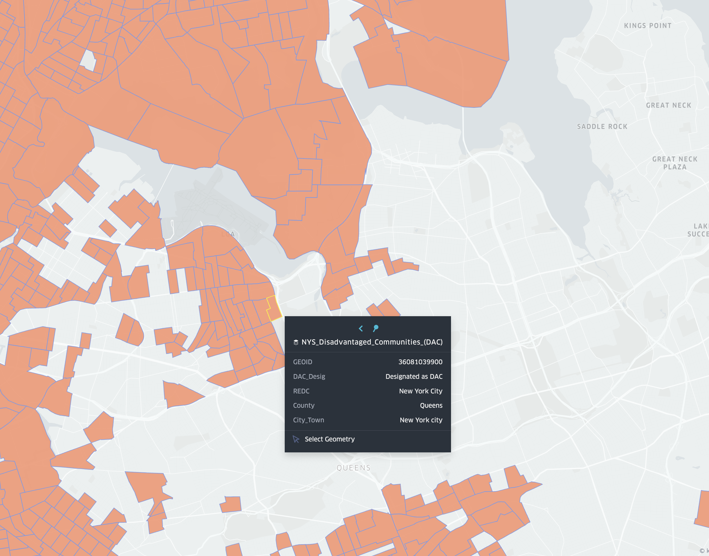

Hi! I'm Surya Kumar
I am a graduate from Cornell AAP in New York City with a Master of Science in Advanced Urban Design. I'm an Architect from India with over 7 years of work experience in Bombay, India.
Why Transit Matters in Urban Design
As an urban designer and architect with architectural roots in India and now practicing in New York City, I've come to view public transportation not merely as infrastructure, but as the circulatory system of urban life. Transit shapes where people live, work, and build community. It determines access to opportunity and defines the spatial equity—or inequity—of our cities.
My interest in transit stems from a fundamental belief that cities function best when they are accessible to all. Coming from Bombay, where local trains serve as the lifeline for millions of commuters daily, I witnessed firsthand how transit infrastructure can democratize urban space. During my graduate studies at Cornell AAP, I developed a comprehensive mapping project that analyzed transit access across multiple scales—from global patterns of mass rapid transit coverage to granular neighborhood-level accessibility in New York City. Through spatial analysis and data visualization, I examined how transit systems either enable or constrain urban equity, revealing the critical gaps between where affordable housing exists and where reliable transit service reaches.
My Assignments

Interactive webmapping - The Geographical Distribution of Subway Usage Decrease Due to COVID-19

Interactive webmapping - Assessing Public Transportation Inequities for Affordable Housing in NYC

Projections and classifications - Global Bikeways and Public Transport Access

Projections and classifications - New York City Travelshed

Charts and Graphs - Understanding Disadvantaged Communities in New York City